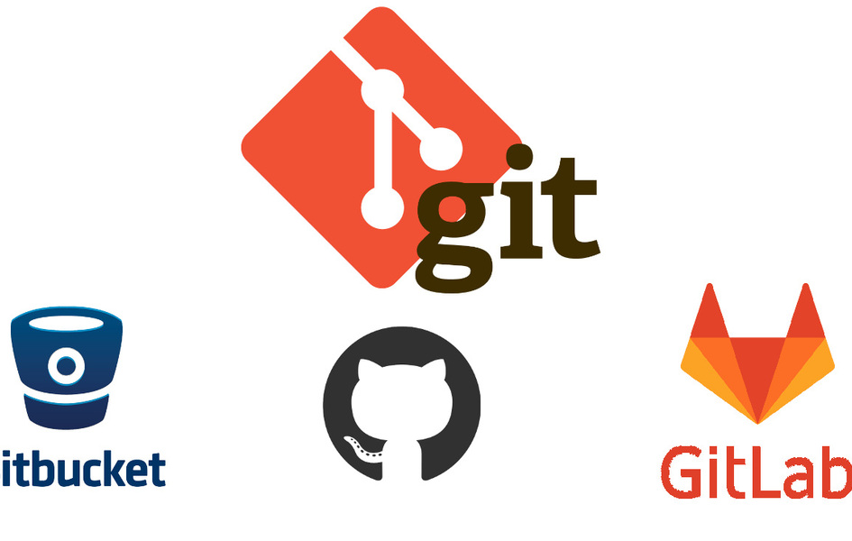

¿Que es Git?

Git es un software de control de versiones diseñado por Linus Torvalds, pensando en la eficiencia y la confiabilidad del mantenimiento de versiones de aplicaciones cuando éstas tienen un gran número de archivos de código fuente.
¿Que es GitHub?
GitHub es una forja para alojar proyectos utilizando el sistema de control de versiones Git. Se utiliza principalmente para la creación de código fuente de programas de ordenador. El software que opera GitHub fue escrito en Ruby on Rails. Desde enero de 2010, GitHub opera bajo el nombre de GitHub, Inc.
¿Cual es la relacion entre Git y GitHub?

git es un software de VCS local que permite a los desarrolladores guardar instantáneas de sus proyectos a lo largo del tiempo. Generalmente es mejor para uso individual.

GitHub es una plataforma basada en la web que incorpora las características de control de versiones de git para que puedan ser utilizadas de forma colaborativa. También incluye características de gestión de proyectos y equipos, así como oportunidades para la creación de redes y la codificación social.
Referencias
Castillo, L. (2016). La guía básica de Git y Github para principiantes [Imagen]. Recuperado de https://conociendogithub.readthedocs.io/en/latest/data/introduccion/
A. (2018). Subiendo miles y miles de archivos a GitHub fácilmente con Git+Bash [Imagen]. Recuperado de https://asfo.medium.com/subiendo-miles-y-miles-de-archivos-a-github-f%C3%A1cilmente-con-git-bash-e493d4a94fe0
A. (2020). Conoce las diferencias claves entre GitLab, GitHub y Bitbucket [Imagen]. Recuperado de https://apptec.cl/blog/conoce-las-diferencias-claves-entre-gitlab-github-y-bitbucket
Velasquez. A (2018). Github [Imagen]. Recuperado de https://blog.muktek.com/git-y-github-627858e07167